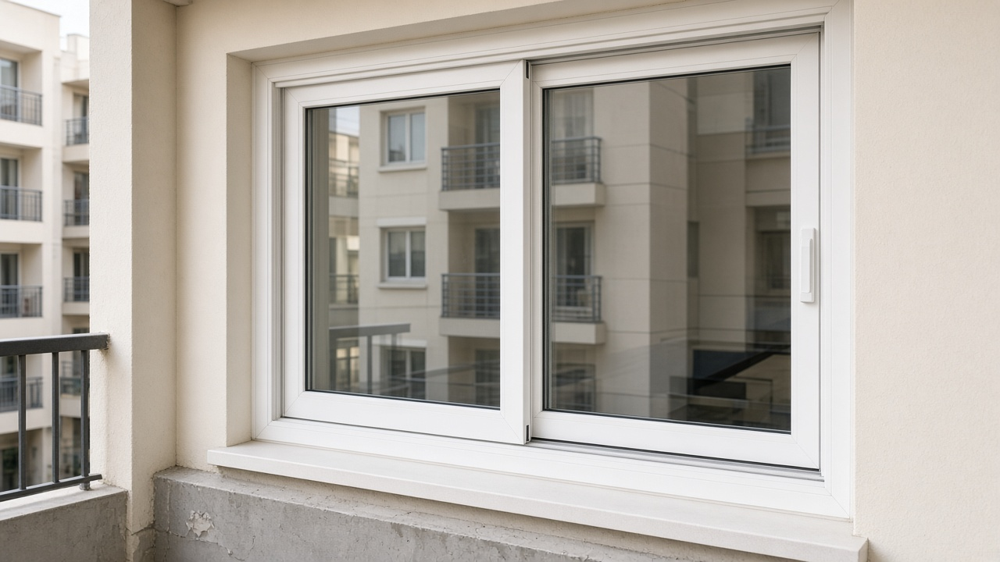

Buying guide
uPVC vs System Aluminium: which is right for your opening?

Both systems are manufactured at Fortune Windoors. The right choice depends on the opening, not a catalogue trend.
Choose uPVC when you want quieter rooms, cooler interiors, and low maintenance. Multi-chamber white or woodgrain profiles suit bedrooms, street-facing walls, and most apartment windows. They do not rust or need painting.
Choose System Aluminium when the opening is wide or tall and you want slim sightlines. Powder-coated aluminium is stronger for large sliders, balcony walls, and commercial fronts.
Many Bengaluru homes use both: uPVC on bedrooms, System Aluminium on the living-room slider. We will say so if that mix is the better quote.